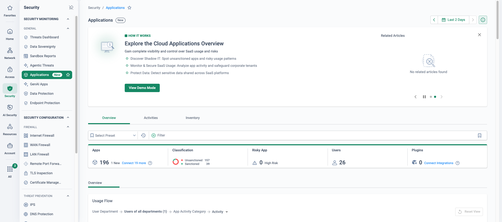
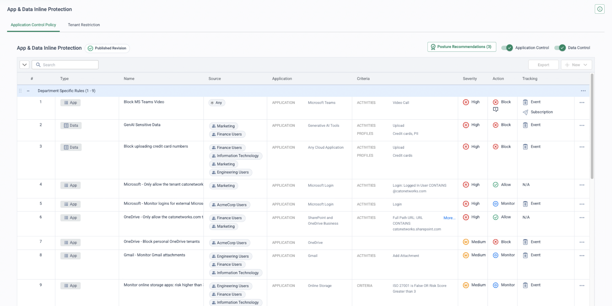

Segment 3 of the 60-minute platform demo — minutes 20 to 25.
Five minutes from shadow IT discovery to sanctioned-app control: the Cloud Apps Dashboard shows
how many SaaS applications are really in use and how risky they are, App Analytics drills to one
application and the people using it, and a single Application Control rule brings it under
policy. Same engine, same flow, a different decision.
Cato already sees every cloud application your people use, scores its risk, and lets
you control what they do in it — without deploying anything new.
The business case for SaaS is being written by the business, not by IT: the processes that
hold the most sensitive data are moving into cloud applications, and often into applications
security never sanctioned. The first thing a prospect wants from CASB is therefore not a rule
but an answer — how many applications are in use, which of them are risky, and who is using
them. Because every user and site already sends its traffic through the Cato PoP, that
inventory builds itself from traffic: no agents, no log uploads, no extra proxy.
The second thing they want is control that is finer than allow or deny. Cato classifies the
application inline, scores its risk and controls the activity — upload, download, share,
login — per user and group. That is what lets you permit the corporate tenant of an
application while blocking its personal equivalent, or allow browsing of a risky application
while stopping uploads to it. Shadow AI is the version of this story every audience recognises
in 2026; treat it as one more class of unsanctioned application and point to
GenAI Security for End Users for the depth.
The five-minute story
Say, then show
Bridge in — from Threat Prevention
“Threats are what comes in. Next is where your data goes: the SaaS applications people adopted without asking.”
Beat 1 — the number they did not expect
Say: “Before any policy exists, the platform already knows which cloud
applications this organisation uses — because the traffic is already here.”
Show:Monitor → Cloud Apps Dashboard — the
distinct application count, the sanctioned-versus-unsanctioned split, the newly seen
applications and the risky ones. Ask what number they expected; the gap is the shadow IT
conversation.
Beat 2 — one application, scored and attributed
Say: “Risk here is not a guess. Every application carries a score built
from the certifications it holds, its security capabilities and how widely it is used.”
Show:Monitor → App Analytics — drill into one
unsanctioned file-sharing or GenAI application the dashboard surfaced, walk the score and
its inputs, then the users and sites actually using it.
Beat 3 — the rule that brings it under control
Say: “Control is by activity, not just by application. The corporate
tenant stays open; the personal copy of the same application is closed; a risky application
can be browsed but not uploaded to.”
Show:Security → CASB — one Application
Control rule: the corporate tenant allowed, personal tenants of the same application
blocked, or uploads to the risky application blocked while browsing stays allowed.
Bridge out — to DLP
“CASB tells you which application. DLP tells you what is inside the upload.”
What the engine does
Classify the application, score it, control the activity
The same single-pass engine that enforced the internet rule in segment 1 and stopped the
threat in segment 2 now makes a CASB decision. For every flow it identifies the cloud
application, looks up its risk score and compliance attributes, checks whether the
destination is the sanctioned tenant, and matches the activity the user is attempting against
the Application Control policy. The inventory, the risk scores and every decision land in the
same dashboards and event stream the prospect has already seen.
Sanctioned tenant — allowed and monitored Personal tenant — blocked Risky application — activity restricted Classification and decisions to the dashboard
One engine, three outcomes: the application is identified and scored inline, the tenant and the activity decide the action, and every decision feeds the Cloud Apps Dashboard and the event stream.
🔍
Discovery without deployment
Traffic already traverses the PoP — the shadow IT and shadow AI inventory needs no agents, log uploads or extra proxies.
📊
Risk you can defend
Each application carries a risk score and compliance attributes — certifications held, security capabilities, popularity — visible in the Cloud Apps Dashboard and App Analytics.
🎚️
Granular activity control
Not just allow or block: permit read-only use of a risky application while blocking uploads, shares or logins — per user group.
🧩
Inline and out-of-band, one policy
Real-time control of live traffic plus API integrations with sanctioned SaaS tenants for data already at rest — one console, one event stream.
Demo runbook
Minutes 20 to 25
Three screens, one rule, no configuration on the day. Before the session, confirm the demo
tenant's dashboard surfaces at least one unsanctioned file-sharing or GenAI application with
real users behind it, and that the Application Control policy already holds the rule you
intend to show. If you are running late, show the dashboard only and move on — two minutes
(Cut 1). If the next cut is also needed, stay on this segment's events screen and show the DLP
Data Incident there instead of walking DLP Configuration in segment 4 (Cut 2).
Open on the inventory
Monitor → Cloud Apps Dashboard
Say: “This is every cloud application this organisation used in the
period — found from traffic, before any policy was written.”
Show: the application count, the sanctioned-versus-unsanctioned split,
newly seen applications, the risky applications and the GenAI tools among them. Ask the room
what number they would have guessed. [2 min]

The opening screen on real traffic (lab tenant): two days of flows and the inventory already stands at 196 applications for 26 users, 157 unsanctioned against 39 sanctioned. That ratio is the first beat — point at it and let the room react before you say anything else.
Drill to one risky application
Monitor → App Analytics
Say: “Pick any one of them and the platform tells you how risky it is,
why, and who is using it.”
Show: one unsanctioned file-sharing or GenAI application: the risk score
and its inputs — compliance certifications held, security capabilities, popularity — then
the users and sites behind it. Name the user by identity, not by address. [1 min]
Show the Application Control rule
Security → CASB
Say: “One rule, three outcomes. The corporate tenant is allowed, the
personal tenant of the same application is blocked, and a risky application can be read but
not uploaded to. Control is by activity, per user group.”
Show: the Application Control policy. Walk one rule end to end — source
group, application, the activity or tenant criterion, action, tracking. Point out the mix of
Monitor and Block rules in the same rulebase: new rules start in Monitor with Event tracking
on, and are promoted to Block only once the evidence has been reviewed. [1.5 min]

The rulebase to walk (demo tenant, fictional groups): activity-criteria rules that allow logins to the corporate Microsoft tenant and the corporate SharePoint/OneDrive URL, a rule blocking personal OneDrive tenants (the separate Tenant Restriction tab is not shown), an activity rule blocking a single Teams activity, a monitor rule on Gmail attachments, and a rule keyed on risk score and a missing ISO 27001 attribute. Newer tenants show this policy under Security → App & Data Inline; older ones under Security → CASB.
Close on the licence boundary, in one sentence
Security → CASB
Say: “Everything on this screen is the CASB licence — the inventory, the
risk scores and the application rules. The data rules in the same policy are the next
segment, and they are the DLP licence.”
Show: the Type column — App rows beside Data rows in one policy — and
leave it on screen for the transition. [0.5 min]
Transition. With the Type column still visible: “CASB tells you which
application. DLP tells you what is inside the upload.” Then open
segment 4 on Security → DLP Configuration.
If they ask
Likely questions and the short answer
“Do we need to deploy agents or upload firewall logs for discovery?”
No. Traffic from every connected site and Cato
Client user already traverses the PoP, so the inventory builds from live traffic with no
agents, log uploads or additional proxies. Mark the applications the customer confirms as
sanctioned directly from the dashboard and the split updates.
“Can we allow an application but stop people uploading to it?”
Yes — that is the point of activity-level
control. An Application Control rule can permit read-only use of a risky application while
blocking uploads, shares or logins for a given user group, and tenant criteria distinguish the
corporate instance from a personal one. Activities exist for applications classified in the
App Catalog; a plain website resolves to a URL category without them.
Yes. Shadow AI Discovery classifies traffic
against AI application signatures, domains and behavioural patterns — standalone AI tools and
AI features embedded in everyday SaaS — and evaluates the risk posture of what it finds. It is
passive by default: it does not block and does not inspect prompt content; the User
Interaction Policy is the enforcement layer above it.
“What does it need to see the traffic, and what licence is this?”
Application Control rules require TLS
inspection for the traffic they match — without it there are no application activities to
act on — so it is staged on the pilot group first. The inventory, risk scores and Application
Control are included in the CASB licence; Data Control rules in the same policy additionally
require the DLP licence.